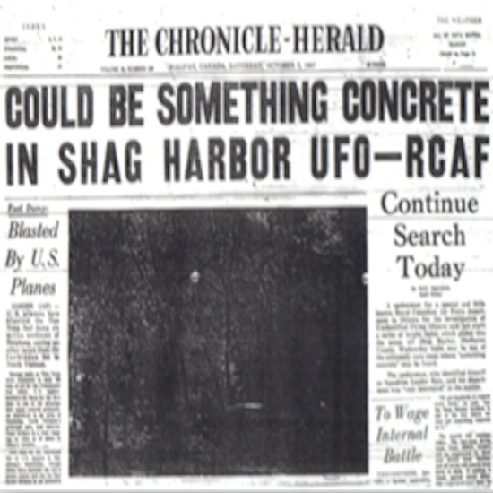
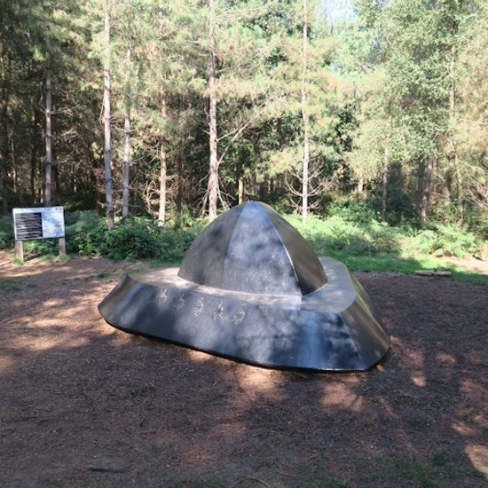
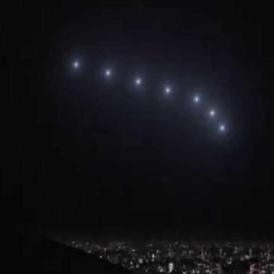

UFO Sightings Over Time (Top 5 Countries)
This visualization answers the next natural question: “When do sightings occur, and how have they changed over decades?”
🛸 Iconic Sightings of the 20th Century

Learn MoreShag Harbour Incident (1967)
When a planet passes in front of its star, it causes a measurable, periodic dip in the star's light. On a quiet October night in 1967, residents of the small fishing village of Shag Harbour watched a string of glowing lights descend from the sky and plunge into the dark waters of the Atlantic. What many initially assumed was a plane crash quickly became something far stranger. Search teams arrived, combing the ocean for debris, yet nothing was ever recovered. Despite an official military investigation, no aircraft was reported missing. To this day, the Shag Harbour incident remains one of Canada’s most compelling and well-documented UFO cases, marked not by speculation, but by unanswered questions left floating beneath the surface.

Learn MoreRendlesham Forest Incident (1980)
In the early hours after Christmas in 1980, U.S. Air Force personnel stationed at RAF Woodbridge stepped into Rendlesham Forest after reports of strange lights filtering through the trees. What they encountered defied easy explanation: flashing colors, an unfamiliar metallic presence, and impressions left behind in the forest floor. Over several nights, multiple servicemen witnessed unusual aerial activity, prompting official reports and decades of debate. Often called “Britain’s Roswell,” the Rendlesham Forest incident stands out not for spectacle alone, but for the credibility of its military witnesses, and the silence that followed their reports.

Learn MorePhoenix Lights (1997)
On March 13, 1997, the night sky over Arizona transformed into a shared moment of disbelief as thousands of people watched a massive formation of lights glide silently overhead. Stretching across miles and seen by entire neighborhoods at once, the phenomenon appeared deliberate, structured, and unlike any conventional aircraft. While later explanations attributed the lights to military flares, many witnesses insisted what they saw could not be so easily dismissed. The Phoenix Lights endure as one of the largest mass-witness UFO events in history, a moment when an entire city looked up and collectively asked the same question.
Pattern Analysis
Sightings surged in the late 1990s and 2000s, shaped by the rise of the internet, popular media, and renewed fascination with extraterrestrials.
Narrative Flow
Following the spatial analysis, this temporal visualization advances the story from “Where?” to “When?”